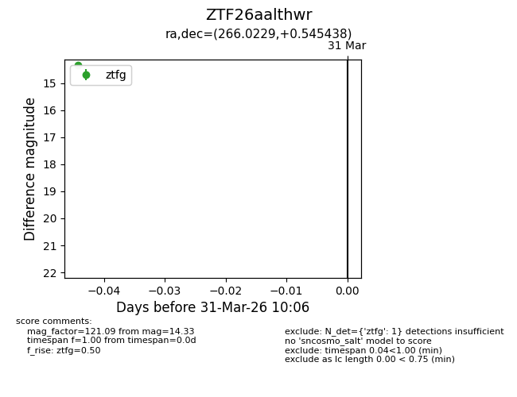
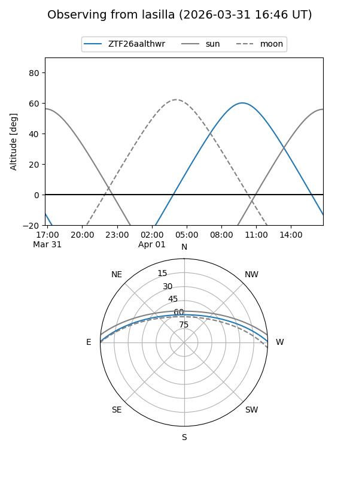
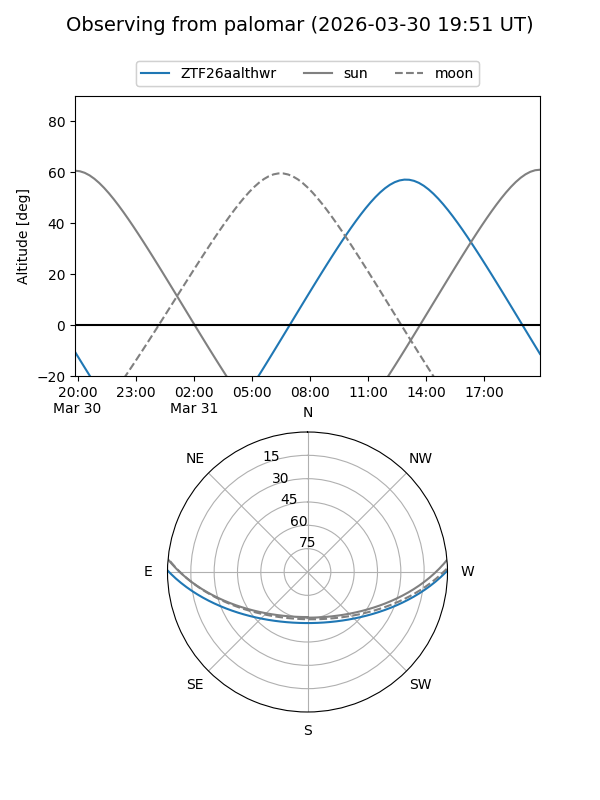

ZTF26aalthwr
Target ZTF26aalthwr at 2026-03-31 10:09
Aliases and brokers:
FINK: link
Lasair: link
ALeRCE: link
alt names
ZTF26aalthwr (ztf,fink_ztf)
Coordinates:
equatorial (ra, dec) = 266.0229,+0.54544
equatorial (HMS+DMS) = 17:44:05.50,+00:32:43.58
galactic (l, b) = (25.5737,+15.19516)
Flags:
Photometry:
last ztfg=14.33
1 ztfg detections
Lightcurve

Visibility


Additional plots